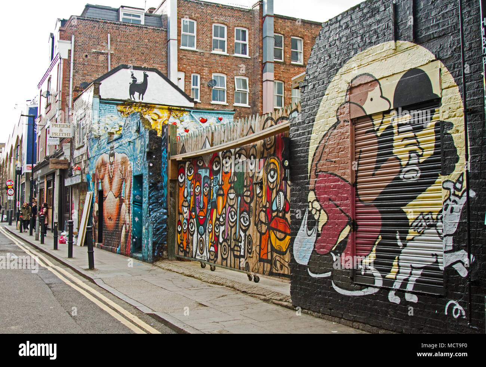
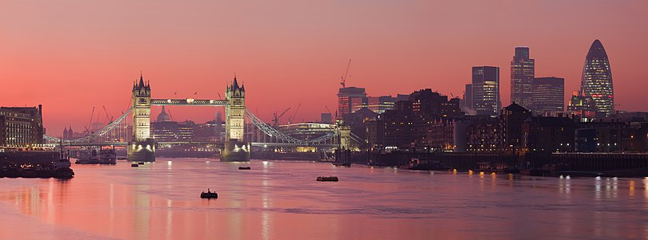
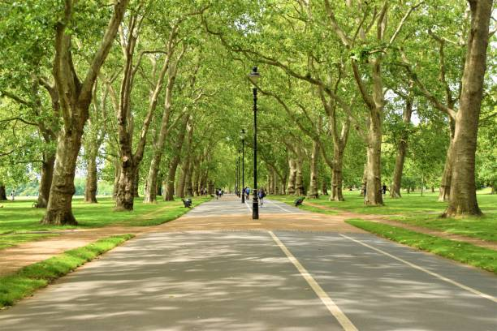

Londres (em inglês: London, AFI: [ˈlʌndən]) é a capital da Inglaterra e do Reino Unido. Por dois milênios, foi um grande povoado e sua história remonta à sua fundação pelos romanos, quando foi nomeada Londínio. O centro de Londres, a antiga City of London, também conhecida como The Square Mile ("a milha quadrada") ou The City, mantém suas fronteiras medievais. Pelo menos desde o século XIX,o nome "Londres" se refere à metrópole desenvolvida em torno desse núcleo. Hoje, a maior parte dessa conurbação constitui a região da Grande Londres,cuja área administrativa tem seu próprio prefeito eleito e assembleia.
Fonte: https://pt.wikipedia.org/wiki/Londres
Brick Lane é uma rua no East End de Londres, no bairro de Tower Hamlets . Ele vai da Swanfield Street em Bethnal Green no norte, atravessa a Bethnal Green Road antes de chegar à parte mais movimentada e comercialmente ativa que atravessa Spitalfields, ou ao longo de sua borda leste. O extremo sul de Brick Lane está conectado à Whitechapel High Street por uma pequena extensão chamada Osborn Street.
Hoje, é o coração da comunidade de Bangladesh do país, com a vizinhança conhecida por alguns como Banglatown. É famosa por suas muitas casas de curry.
Mais recentemente, a área também se ampliou para ser uma área vibrante para estudantes de arte e moda, com um espaço de exposição considerável. Todos os anos, a maioria dos cursos de belas artes e moda expõe seus trabalhos perto de Brick Lane.
Desde o final da década de 1990, Brick Lane tem sido o local de vários dos clubes noturnos mais conhecidos da cidade, notadamente 93 Feet East e The Vibe Bar, ambos construídos no local da The Old Truman Brewery, que já foi o centro industrial da área, e agora um complexo de escritórios e entretenimento. Em 1999, foi palco de um bombardeio que feriu 13 pessoas.
Brick Lane tem uma exibição regular de grafite, que conta com artistas como Banksy, Stik, ROA, D*Face,Ben Eine e Omar Hassan. A rua tem sido usada em muitos videoclipes, incluindo "Glory Days" de Just Jack, "All These Things That I've Done" de The Killers, e "Überlin" de REM .
Fonte: https://en.wikipedia.org/wiki/Brick_Lane
"London's Tower Bridge", ou simplesmente "Tower Bridge", é uma ponte-báscula construída sobre o rio Tâmisa, na cidade de Londres, capital do Reino Unido. Foi inaugurada em 1894 e, atualmente, é um dos pontos turísticos mais visitados da cidade, além de ser conhecida como uma das pontes mais famosas do mundo. Está localizada ao lado da Torre de Londres e a estação do metrô mais próxima é a Tower Hill.
Em 2002, num projeto organizado pela British Broadcasting Corporation, ela foi escolhida como um dos melhores edifícios da Grã-Bretanha, ficando ao lado de outras estruturas grandiosas, como a Holyroodhouse, em Edimburgo; do Palácio de Windsor e da Catedral de Durham, no norte da Inglaterra.
Fonte: https://pt.wikipedia.org/wiki/Ponte_da_Torre
Victoria Park (conhecido coloquialmente como Vicky Park ou People's Park ) é um parque no bairro londrino de Tower Hamlets, no leste de Londres, Inglaterra. É o maior parque de Tower Hamlets e um dos espaços verdes mais visitados de Londres, com aproximadamente 9 milhões de visitantes por ano. O parque abrange 86,18 hectares (213,0 acres) de espaço aberto e foi aberto ao público em 1845.
A tradição de falar em público no parque continuou até bem depois da Segunda Guerra Mundial, e ainda mais tarde se refletiu em shows de rock politicamente orientados, como os realizados pelo Rock Against Racism e pela Liga Anti-Nazi nas décadas de 1970 e 1980. E ainda não é incomum que passeatas ou manifestações comecem ou terminem no Victoria Park.
Em 26 de junho de 2014, uma campanha para reviver o Speakers' Corner no Victoria Park foi lançada em um evento de teatro democrático realizado na Prefeitura de Shoreditch . Organizado pelo The People Speak, um grupo participativo de campanha e eventos, 66 membros da plateia deliberaram sobre como usar a receita em dinheiro de seus ingressos, e, eventualmente, votaram para recriar a conhecida tradição de liberdade de expressão e debate no Hyde Park. No Victoria Park, no leste de Londres, a campanha deveria ser lançada formalmente em julho de 2014.
Fonte: https://en.wikipedia.org/wiki/Victoria_Park,_London
